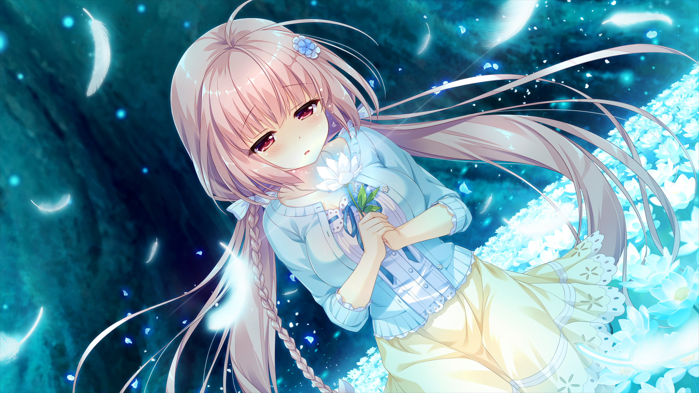
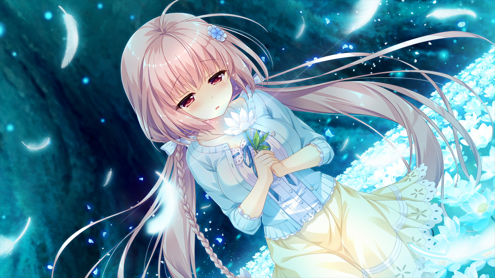

若能与你再次相见
题记
一次偶然的机会接触到了苹果妹，本游戏作为中岛大河的初作，一脉相承着ab3社的生死观描写。在循循渐进的日常中逐渐刻画出人物的形象，在渐渐拉长的时间线之中，淡然的走向离别。本作借助于时间轮回，通过拥有无限回溯能力的怀表，一次又一次的尝试改变未来，一次又一次的失败。可是，未来真的注定是无法改变的吗？即使是一点点的偏移......推完之后，心里有些惋惜和不舍，也借此机会重新回味一下这部感人的作品。
作品信息
- 原名:できない私が、くり返す。 中译名：若能与你再次相见
- 企画/剧本——中岛大河 原画——秋空もみぢ;蒼月しのぶ 音乐——西坂恭平
- 重要Tag:生死观，穿越，宿命论，剧情锁，泣系
- 全线通关时长参考:15～20小时(主推女主线)
内容简介
- 【未来无法改变】
- 【无论回到过去多少次，也没有任何意义】
- 【即使对过去做任何事，未来也不会改变】
- 没错，“已经确定的未来”是无法改变的。拥有时间回溯能力却无法干涉着未来，无论怎么样做终会到达哪个注定“未来”，那么一次又一次的回溯真的没有意义吗？
- 理所当然的，对于那些即将迎来死期的人，无论进行怎样的尝试终究难逃死亡的收束。
个人简评
- 剧情:B 诗乃线作为剧情锁设置下的产物拥有着其中最高的完成度，缓缓推进的平淡日常之中为情感的爆发铺下了伏笔，反转稍显刻意，为te线的出现和本文的主题高度契合。


 
